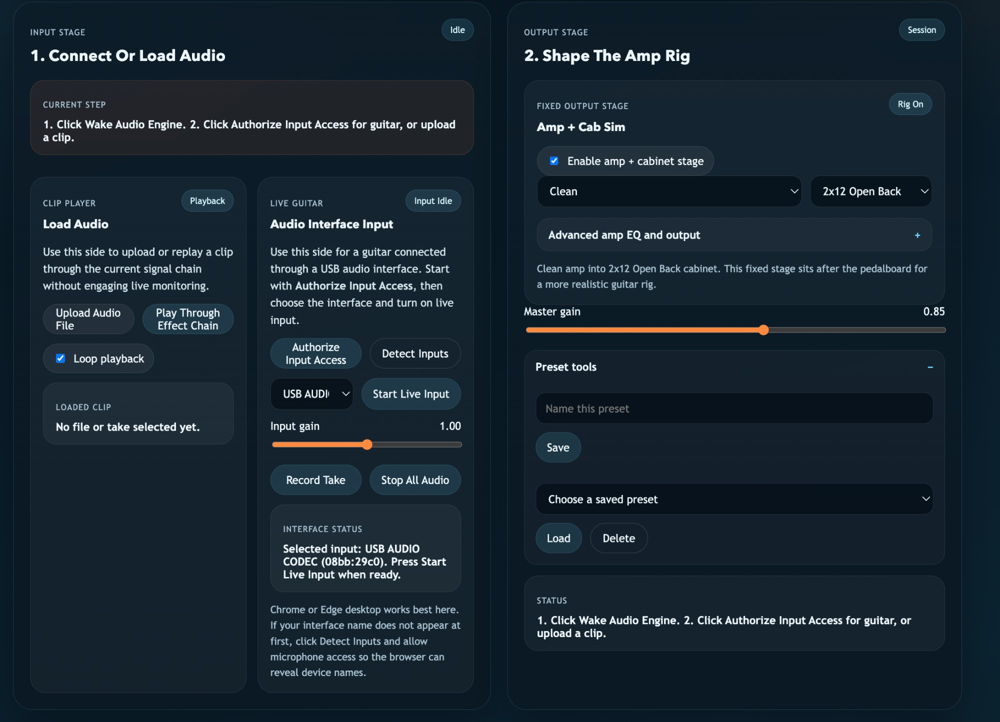
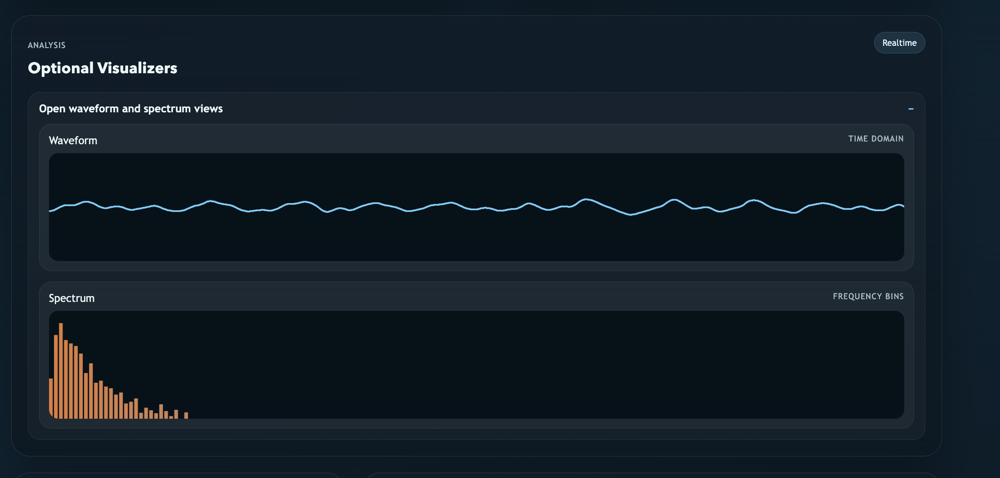
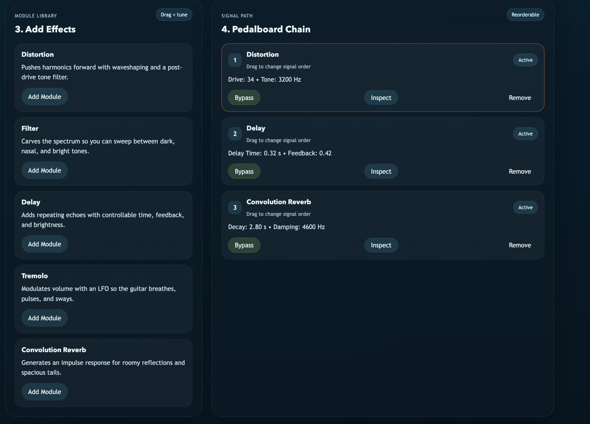

The core idea behind Modular Guitar Tone Lab is simple: make the browser behave like a reconfigurable pedalboard, but make the interface teach something about DSP at the same time. I was less interested in reproducing a fixed set of guitar presets and more interested in building a space where a player can hear how routing choices reshape tone.
In other words, the project is both a musical tool and a pedagogical instrument. That design goal pushed the implementation in two directions at once. First, the system had to stay responsive enough for real-time experimentation with uploaded files, recorded takes, and live guitar input. Second, the signal chain had to remain legible. The app is not just "effects in the browser" — it is a deliberately visible graph of audio decisions.
"The project is not just effects in the browser; it is a deliberately visible graph of audio decisions."
01 Unifying Three Different Source Types
The most important architectural decision was to route every source type through the same downstream chain. The application supports three entry points:
- Uploaded or recorded clips decoded into an
AudioBufferand played viaAudioBufferSourceNode - Preview playback through a visible HTML
<audio>element wrapped bycreateMediaElementSource() - Live guitar input captured from
getUserMedia()and wrapped in aMediaStreamSource
Rather than building separate effect paths for each of those entry
points, I route them all into a shared sourceBus, then into
the pedalboard, then into the fixed amp/cab stage, then into the
analyzers and master output. That decision simplified both the UI and
the mental model: once a source is "in the lab," it obeys the same
routing semantics as everything else.
This also means that comparisons are meaningful. If a user uploads a clip, reorders distortion and delay, then switches to live input, the downstream rig behaves consistently. The global dry/processed comparison toggle is therefore not just a convenience; it is a way to make the signal chain legible across source types.

02 Why The Pedalboard Is Modular But The Amp/Cab Is Fixed
I split the rig into two conceptual zones. The first zone is the reorderable pedalboard: distortion, filter, delay, tremolo, and convolution reverb can all be inserted, removed, bypassed, and dragged into different positions. The second zone is a fixed amp/cab stage that sits after the pedalboard.
That was a deliberate design choice. From a guitar-rig perspective, it makes sense for the pedals to be the experimental layer and the amp/cab to be the final voicing stage. From a UX perspective, it prevents the graph from becoming visually chaotic. The player can explore pedal order freely without also deciding whether the cabinet model should sit before or after every time-based effect.
Technically, the amp/cab block is built from BiquadFilterNode,
GainNode, and WaveShaperNode. I chose not to build
a full nonlinear amp simulator with speaker IR loading in this version.
The goal was a musically convincing downstream color stage that supports
the educational aims of the lab — not a sample-accurate recreation of a
specific commercial amp model.
03 DSP Choices Inside Each Module
I kept the modules intentionally transparent so that each one has a clear relationship between a parameter and a sonic consequence.
- Distortion uses a waveshaper with a post-drive low-pass stage so Drive and Tone remain audible as independent controls.
- Filter is centered around a
BiquadFilterNodewith switchable mode, cutoff, and resonance. - Delay uses a feedback loop with a tone filter in the repeat path so brightness decays along with the echoes.
- Tremolo uses an oscillator-driven gain modulation path rather than automation curves, keeping the module explicitly LFO-based.
- Convolution reverb generates an impulse response procedurally — keeping the project self-contained while still demonstrating IR-based space processing.
Every module also exposes a wet/dry mix. That is partly a practical guitar-design decision, but it also reinforces the pedagogical focus. Mix controls make it easier to hear a processor as an intervention rather than an all-or-nothing replacement of the original signal.

04 Routing As A Musical Argument

The app is structured around the idea that order matters. A player does not simply "add delay" or "add distortion"; they decide where those processors sit relative to one another. That seems obvious to guitarists, but in many DSP demos the graph is hidden behind a fixed order, which makes the result feel predetermined.
Here, effect order is the point. Putting distortion before delay creates repeats that inherit the saturation; putting delay before distortion collapses the echoes into a denser overdriven texture. Reverb before tremolo reads very differently from tremolo before reverb. The interface therefore treats drag-reordering as a central musical gesture, not a secondary convenience feature.
"Effect order is the point. The interface treats drag-reordering as a central musical gesture, not a secondary convenience feature."
05 Live Input, Monitoring, And The Browser's Constraints
Live guitar input is where the project becomes most clearly "WebAudio"
rather than just "audio playback with effects." Device discovery is done
with enumerateDevices(), stream capture uses
getUserMedia(), and browser voice-processing features are
disabled so the signal arrives with as little conferencing-style
treatment as possible.
That choice improves fidelity, but it also exposes the real monitoring issues that come with browser-based guitar rigs: direct monitoring on the hardware interface, acoustic feedback from speakers, and the basic fact that browser live monitoring is not the same thing as a dedicated native amp simulator. Rather than hiding those constraints, I chose to surface them in the interface with explicit guidance around interface selection, monitoring path, and device permission.
In practice, this made the live-input UX as much about communicating system conditions as about building DSP. A guitarist needs to know which input the browser is actually using, whether the app has permission to inspect device labels, and whether the current monitoring setup is likely to produce doubled or unstable sound.
06 UI Design: Teaching The Graph Without Overwhelming The Player
One of the harder design problems was deciding how much of the graph to expose at once. Too little structure makes the project feel like a toy; too much structure makes it feel like a debugging console. The final UI divides the session into a deliberate sequence:
- Connect or load a source
- Shape the amp rig
- Add effects
- Reorder the chain
- Inspect the selected processor
The split input-stage layout reflects that philosophy. File playback and live guitar monitoring solve different user problems, so they deserve different visual lanes. I did not want "upload a clip," "authorize microphone access," and "record a take" to read as one flat row of equally urgent buttons. Reorganizing the entry point made the app easier to navigate without making it less expressive.
07 Why I Stayed At The Node-Graph Level
A natural question is why this project stops at stock WebAudio nodes
instead of moving immediately into AudioWorklet-based custom
DSP. The answer is scope and intention. For this iteration, the goal was
to make signal flow, ordering, and parameter exposure musically
intelligible. Built-in nodes were already rich enough to support that —
they let me focus on graph design, interaction, and real-time listening
rather than spending the whole project implementing a custom processing
kernel.
That said, the project is structured so that some modules could migrate
into AudioWorklet in a future pass. A custom distortion
stage, more nuanced dynamics processing, or cabinet IR loading would all
be reasonable next steps. The current architecture is modular enough
that those evolutions would feel like deepening the instrument rather
than replacing it.
08 What I Am Proud Of
What I like most about this project is that the implementation and the design argument point in the same direction. The graph is modular because the project is about modular listening. The interface exposes order because order is musically consequential. The visualizers are not just decoration; they are there to help users connect what they hear to what they see. Even the amp/cab block exists partly to make the pedalboard legible in a more realistic guitar context.
In that sense, the project is not trying to compete with a professional native amp suite. It is trying to do something slightly different: turn a browser into a place where computational sound ideas stay audible, musical, and explorable.